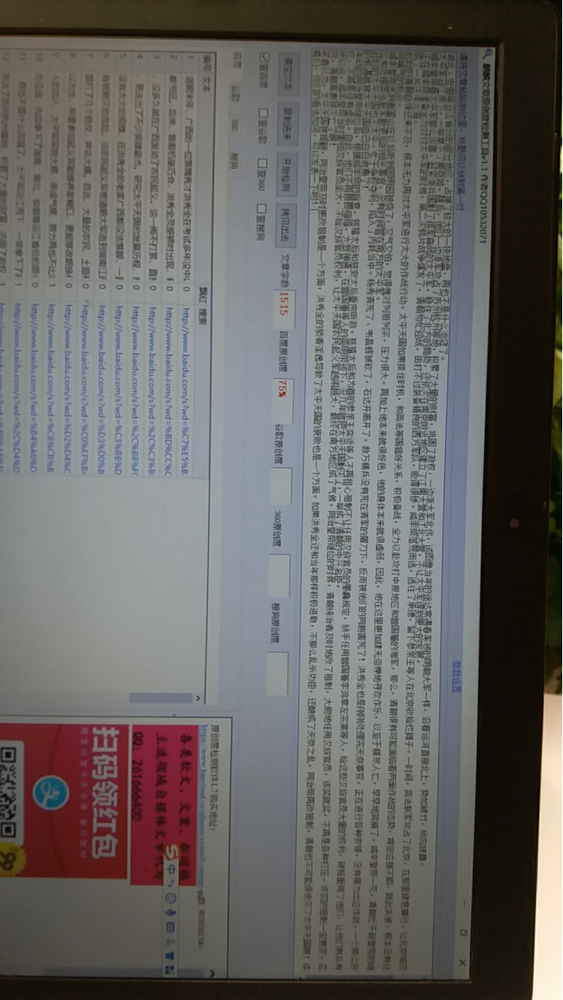

咸丰没能灭了太平天国，同治却除了心头之患，是何原因
清朝末年，广西的一位落魄秀才洪秀全在考试多年没中以后，在老家当起了穷困潦倒的教书匠。后来，靠着机缘巧合，洪秀全灵感顿时出现，和他的一帮兄弟创立了拜上帝会，没多久就在广西发动了农民起义。这一闹不打紧，直接让清王朝的寿命缩短了几十年，更走出了不少英雄豪杰。
研究太平天国的发展历程，我们就会发现，太平天国当初没有太大的规模，在洪秀全的老家广西都没法落脚，一直被清政府追得到处跑，甚至于有被剿灭的危险。当农民起义军被清朝大军追到湖南江西等地的时候，农民起义军在那里打了几个胜仗，声名大噪。
自此，大量的农民、土匪和游民加入了太平军。他们无以为生，希望参加起义军能够养家糊口，更能够改朝换代，当新王朝的主人。有了这些人的加入，太平军军势大震、渐成气候，势力再也不比当年，开始在长江中下游地区四处征战，先后拿下了湖南、湖北、安徽等沿江省份的部分地区，占据了较大的一块地盘，再也不是什么流寇。
太平军沿江而下，一举拿下了南京城。随后，他们一边派军攻占了苏州杭州等地，积累了大量的财富，巩固了政权，一边派大军北伐，试图像当年的徐达常遇春率领的明朝大军一样，沿着运河直接北上，势如破竹，所向披靡。
咸丰皇帝看太平军那么厉害，赶紧派兵围剿了孤军奋战的太平军，稳住了北方的局势，还依次在南京附近地区建立了江南大营和江北大营，不让太平军得到更大的发展。
正在咸丰帝准备全力对付太平军的时候，第二次鸦片战争爆发了，清朝匆忙迎战，由打不过装备精良的西方军队，败得很惨。咸丰帝落荒而逃，逃往了承德，留下恭亲王等人在北京收拾烂摊子。一时间，英法联军攻占了北京，在那里肆意横行，让北京城变成了一片汪洋火海。
此时的清朝自保还来不及，根本无力再对太平军进行太大的作战行动。太平天国如果抓住时机，和英法等国搞好关系，积极备战，全力以赴攻打中原地区和曾国藩的湘军，那么，清朝很有可能面临着两面作战的态势，肯定应接不暇，顾此失彼，根本没有任何喘气的机会。
咸丰皇帝逃到避暑山庄以后听到圆明园被烧了，又气又怕，觉得愧对列祖列宗，压力很大。再加上他本来就很好色，他的身体本来就很虚弱，因此，他在这里更加肆无忌惮地寻欢作乐，以至于精尽人亡，早早地驾崩了。咸丰皇帝一死，清朝忙于新皇帝的继位和处理英法联军撤退后的相关事宜，没有时间管在南方的太平军。
此时的太平天国也不太平。忙于争权夺利，陷入了内耗当中。杨秀清死了、韦昌辉被砍了，石达开离开了。数万精兵没有死在清军的屠刀下，反而被他们的同胞害死了！洪秀全也是刚刚处理完天京事变，正在进行各种安排，没有精力出征作战。一个那么好的机遇就被太平天国自己白白浪费了！
年幼的同治皇帝继位后，根据咸丰帝的旨意，慈禧太后和慈安太后垂帘听政。慈禧太后和为首的恭亲王奕��等人不再担心祖制不让任用汉族官员的愚蠢规定，放手任用曾国藩李鸿章左宗棠等人，给这些汉族官员大量的权利，破格重用了他们，让他们有兵有权，不再是徒有虚名。
自此，他们不再畏畏缩缩，大显神通，在曾国藩等人的英明带领下，没几年就把太平天国剿灭了，一举成了清朝的中兴名臣。所以说，咸丰皇帝当时害怕汉族官员坐大，不给汉族官员权利，让太平天国农民起义军越闹越大，最终在南方地区成了气候。同治皇帝继位的时候，清朝统治者及时地改了祖制，大胆地任用汉族官员，该奖就奖，不再是各种打压。该变的祖制一定要变，否则，清朝真要被灭亡了啊！
笔者以为，太平天国被推翻，同治皇帝及时更改祖制是一个方面，洪秀全的骄奢淫逸导致了太平天国的衰败也是一个方面。如果洪秀全还和当年那样积极进取，不那么乱杀功臣，还酿成了天京之乱，同治帝再改祖制，清朝也不可能很快灭了太平天国啊！读者们，你们的看法如何，可以发表一下哟！
